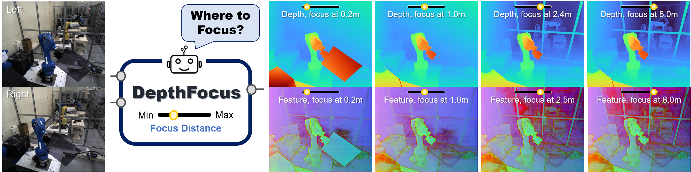
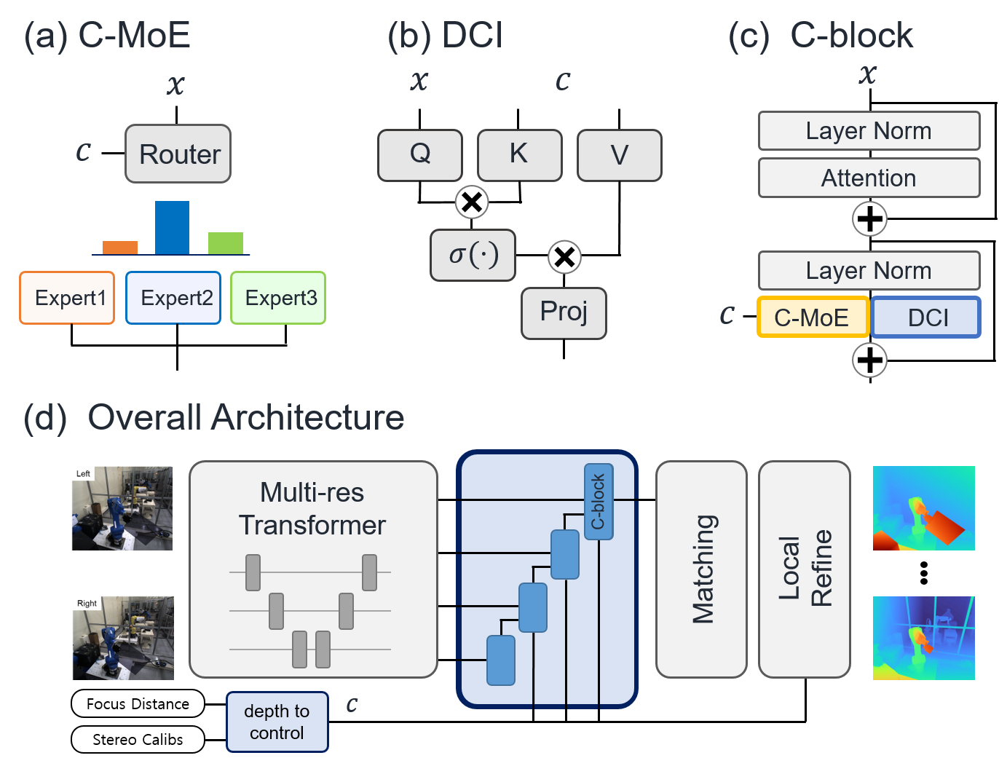
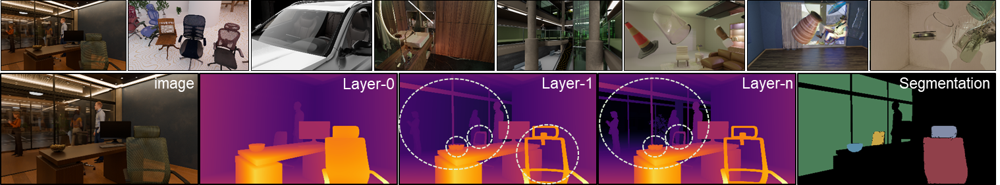
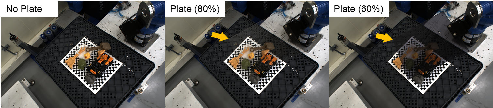
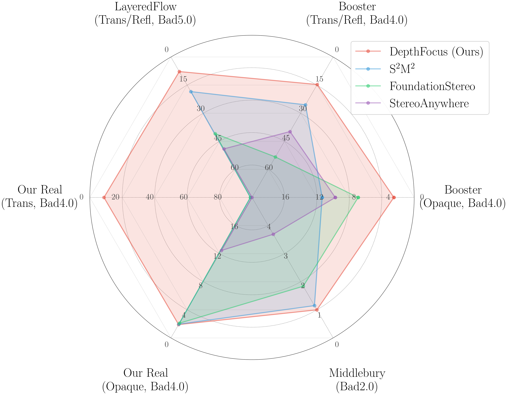

CVPR 2026
1Samsung Electronics
*Corresponding Author

Overview of DepthFocus. DepthFocus resolves depth ambiguities in see-through scenes by selectively estimating surfaces aligned with a user-intended focus distance. Unlike passive systems, our steerable architecture modulates internal features as an adaptive opacity filter to resolve layered occlusions. As the intended focus increases, the model actively "peels away" foreground geometry to reconstruct hidden layers, such as transparent partitions and backgrounds. Feature visualizations confirm that the network dynamically reconfigures its computation to perceive only the geometry relevant to the user's intent.
Depth in the real world is rarely singular. Transmissive materials create layered ambiguities that confound conventional perception systems. Existing models remain passive; conventional approaches typically estimate static depth maps anchored to the nearest surface, and even recent multi-head extensions suffer from a representational bottleneck due to fixed feature representations. This stands in contrast to human vision, which actively shifts focus to perceive a desired depth. We introduce DepthFocus, a steerable Vision Transformer that redefines stereo depth estimation as condition-aware control. Instead of extracting fixed features, our model dynamically modulates its computation based on a physical reference depth, integrating dual conditional mechanisms to selectively perceive geometry aligned with the desired focus. Leveraging a newly curated large-scale synthetic dataset, DepthFocus achieves state-of-the-art results across all evaluated benchmarks, including both standard single-layer and complex multi-layered scenarios. While maintaining high precision in opaque regions, our approach effectively resolves depth ambiguities in transparent and reflective scenes by selectively reconstructing geometry at a target distance. This capability enables robust, intent-driven perception that significantly outperforms existing multi-layer methods, marking a substantial step toward active 3D perception.
We formulate a general framework for steerable depth estimation where a scalar conditioning variable c ∈ [0, 1] acts as a proxy for physical distance. The ideal conditional estimator is governed by three core properties:
In non-transmissive opaque regions, the estimated depth remains strictly invariant to changes in the control variable.
In transmissive regions, the directional ordering of layers is preserved. An increase in focus never reverts the estimate to a shallower layer.
The model discretely selects a valid surface layer that is optimally positioned relative to the physical reference depth plane.
To ensure c acts as a direct proxy for distance, we first convert a physical reference depth Zref into disparity dref using the stereo camera calibration parameters (focal length f and baseline B):
dref = (f × B) / Zref
This reference disparity is then mapped to the normalized control variable c ∈ [0, 1] based on the maximum valid disparity dmax of the scene:
dref(c) = (1 - c) × dmax
By grounding the supervision in the disparity domain while maintaining a depth-based control intent, the network effectively scans through overlapping surfaces in a step-wise manner according to the user's focus.

We realize the steerable framework through two complementary modulation modules integrated into our Vision Transformer. Instead of re-executing a heavy backbone, we append a conditional fusion stage where pre-computed multi-resolution features are progressively aggregated.
The Conditional Mixture-of-Experts (C-MoE) employs a router to produce continuous weights, enabling dynamic feature transformation paths based on the scalar control variable. Concurrently, Direct Condition Injection (DCI) provides explicit guidance via an attention-based mechanism. These components work in parallel to selectively extract features relevant only to the target depth layer.
To realize the "peeling" effect of foreground geometry, the model must select a valid surface based on a directional proximity criterion. When multiple transmissive layers overlap, the network does not simply choose the absolute closest surface in distance. Instead, it estimates the actual surface disparity d* that is closest to the reference disparity dref while strictly positioned physically behind it.
Here, S represents the set of all valid surface disparities in the scene. By enforcing the condition d ≤ dref (which translates to physical depth Z ≥ Zref), the model guarantees monotonic depth transitions. This mathematical constraint ensures that as the intended focus distance increases, the estimated depth stably progresses toward the background without regressing to shallower layers.

We curated a large-scale synthetic dataset specifically designed for condition-aware depth estimation in see-through scenes. It features diverse transmissive materials such as glass, plastic, and transmissive meshes. Furthermore, the dataset provides comprehensive ground truth including dense disparities for multiple surfaces and precise semantic segmentation labels to train the network's layer-selective capabilities.

To evaluate real-world generalization, we captured a high-quality real stereo dataset in a controlled laboratory environment. This benchmark features complex bi-layer configurations using acrylic plates with two distinct levels of transmissivity (60% and 80%). Crucially, it provides high-precision dense depth annotations for both layers, serving as a rigorous benchmark to assess the model's robustness and steerability against real physical noise and light interactions.

We evaluate DepthFocus using a standard single-layer benchmark protocol, measuring accuracy strictly on the first visible surface. While our model achieves leading performance on standard opaque datasets like Middlebury, its architectural advantages are most evident in see-through scenes.
Crucially, the performance margin over existing top-tier models becomes remarkably large in complex multi-layered environments. On datasets featuring severe depth ambiguities, namely Booster, LayeredFlow, and our custom dataset (Ours), DepthFocus demonstrates a substantial lead. This confirms the robustness of our condition-aware control in resolving transmissive layered geometry.
This section visualizes the continuous depth transitions and feature modulations generated by our steerable architecture in see-through scenes. The results demonstrate how the network actively resolves layered ambiguities according to the intended focus.
Swipe, drag, or click the dots below to explore the transitions across 10 different scenes.
@inproceedings{min2026depthfocus,
title={DepthFocus: Controllable Depth Estimation for See-Through Scenes},
author={Min, Junhong and Kim, Jimin and Min, Cheol-Hui and Kim, Minwook and Jeon, Youngpil and Choi, Minyong},
booktitle={Proceedings of the IEEE/CVF Conference on Computer Vision and Pattern Recognition (CVPR)},
year={2026}
}